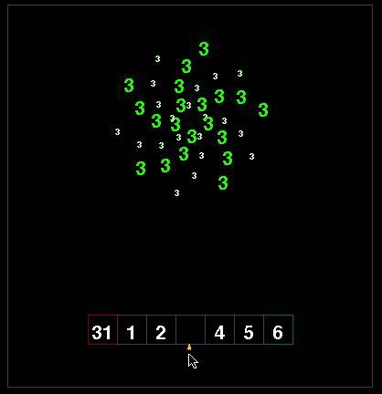
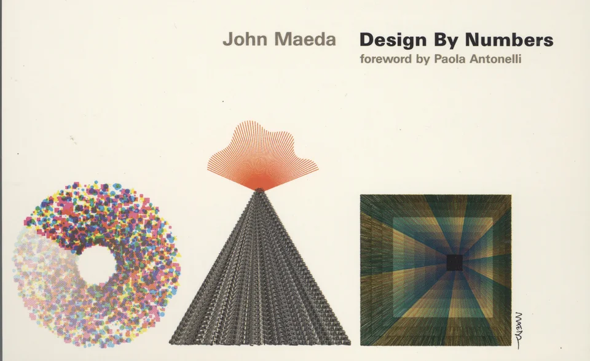
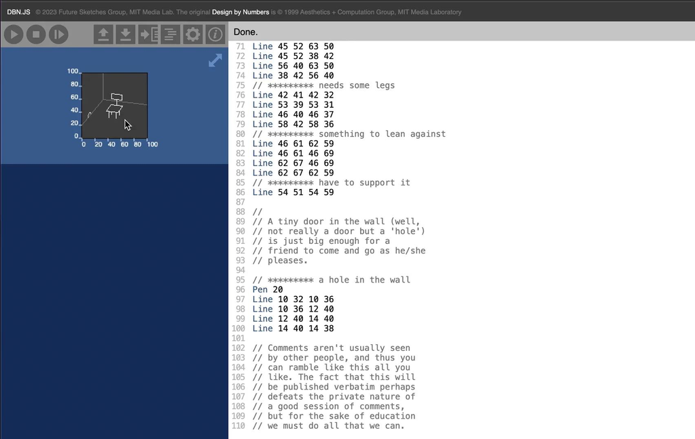
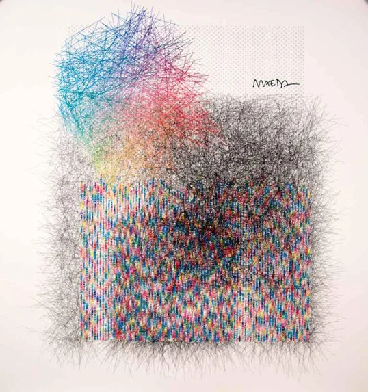
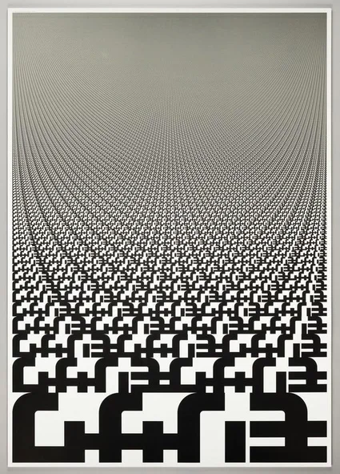
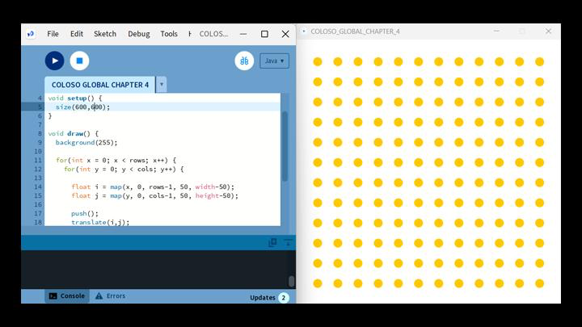

Diseño, código y creatividad
Nacimiento
9 de junio de 1966, Seattle, Estados Unidos
Edad
60 años
Nacionalidad
Estadounidense-japonesa
Profesión
Diseñador gráfico, artista, científico informático y educador
Es diseñador gráfico, artista, científico informático y educador estadounidense-japonés. Estudió informática en el MIT y posteriormente diseño en Japón. Su importancia está en haber explorado tempranamente la relación entre computación, arte y diseño.
En el MIT Media Lab dirigió el Aesthetics and Computation Group, donde investigó cómo el código podía utilizarse para crear imágenes, formas e interacciones.
Su trabajo ayudó a cambiar la idea de que la computación era exclusivamente una disciplina técnica, demostrando que también podía funcionar como medio creativo y de expresión.
Él comenzó estudiando informática, pero descubrió que las herramientas técnicas no siempre permitían abordar los problemas desde una perspectiva visual y estética. Por eso decidió estudiar diseño y arte, buscando conectar ambos campos.
Su interés estaba en que los artistas y diseñadores no fueran solamente usuarios de tecnología, sino que pudieran comprender y modificar la lógica que existe detrás de ella.
Así, buscó eliminar la separación entre lo técnico y lo creativo, permitiendo que el computador se convirtiera en un espacio donde diseñar, experimentar y expresarse.

Uno de sus principales aportes fue Design by Numbers, un lenguaje de programación creado para que artistas y diseñadores pudieran aprender los principios básicos del código de manera sencilla. En lugar de utilizar el computador solamente como una herramienta para producir diseños, Maeda propuso utilizar el código como material de diseño.
Esta propuesta influyó posteriormente en herramientas como Processing, desarrollada por sus antiguos estudiantes Ben Fry y Casey Reas, que permitió acercar la programación creativa a artistas y diseñadores.


Para Maeda, hacer arte con computación significa utilizar el código no solamente para ejecutar una tarea, sino como un medio creativo. Un diseñador puede establecer reglas, variables y comportamientos que generen imágenes, formas o movimientos.
Por ejemplo, en lugar de dibujar manualmente cada elemento, puede programar un sistema que determine su posición, tamaño o transformación. De esta manera, el diseñador no solo crea un resultado final, sino también las reglas que permiten producirlo.


La computación se vuelve creativa cuando el diseñador deja de limitarse a utilizar las funciones que un programa ya ofrece y comienza a crear sus propias reglas y sistemas.
Mediante código, algoritmos y datos puede generar múltiples resultados a partir de una misma estructura. Esto permite experimentar con variables, movimiento, interacción y generación automática.
El diseñador pasa de decidir solamente cómo se verá un objeto a definir también cómo se comportará y cómo puede transformarse.
Maeda amplió la idea de qué significa diseñar. Tradicionalmente, el diseñador trabaja con elementos como imágenes, tipografías, objetos o materiales. Su propuesta incorporó también código, algoritmos y datos como materiales de diseño.
Además, defendió una relación más cercana entre arte, tecnología, ciencia y diseño, idea que posteriormente impulsó mediante el concepto de STEAM, que incorpora las artes al modelo STEM.
Su trabajo contribuyó a formar diseñadores capaces de participar activamente en el desarrollo tecnológico, y no solamente utilizar sus herramientas.

El diseño cambió la forma de entender la tecnología, pasando de valorar solo su rendimiento técnico a priorizar la comprensión y la experiencia del usuario.
Introdujo la simplicidad y la abstracción para hacer accesibles sistemas complejos, demostrando que la tecnología no debe hacer todo lo técnicamente posible, sino solo aquello que aporta valor real a las personas.
La tecnología no debe hacer todo lo posible, sino aquello que aporte valor real a las personas.
El pensamiento de Maeda sigue siendo relevante porque plantea una pregunta similar a la que enfrentamos actualmente con la inteligencia artificial: ¿somos usuarios de la tecnología o podemos comprenderla y dirigirla?
Así como Maeda defendió que los diseñadores aprendieran a comprender el código, hoy resulta importante entender cómo funcionan las herramientas de IA, qué decisiones delegamos en ellas y qué sesgos pueden contener.
Su pensamiento invita a utilizar la tecnología como un medio para ampliar la creatividad, pero manteniendo el criterio y las decisiones humanas.